Take a working Alpha application written in C, Fortran and MACRO-32, find what stops it running correctly on x86, fix it with as few changes as possible, and prove the result matches the Alpha to the last cent.
1 · Introduction and setup
Kestrel Marine Supply has run its nightly order processing, ORDPROC, on an AlphaServer since 1996. Your company is moving to OpenVMS on x86. Your job is to get ORDPROC building on OpenVMS x86 and producing exactly the invoice register the Alpha produced from the same data.
Result
@RUN_TEST prints RUN_TEST: PASSED - invoice register matches the Alpha run, and you can say why each change you made was needed.
Tools
The VSI C, Fortran and MACRO-32 compilers on VMS/XDE, an interactive DCL session for OpenVMS commands, xdecli (runs one DCL command from bash; Claude Code uses it), the VS Code editor, git, the OpenVMS debugger, and Claude Code.
Project
DKC100:[bootcamp-lab], on Linux /opt/xde/vms_os/V9.2/DKC100/bootcamp-lab: a git repository with the Alpha source as it runs in production today.
The work follows the order a real port should:
analyse→fix→build→validate
Two rules come from the project's README and matter all the way through:
Don't change anything in DATA/ or TEST/. The data files are shared with systems that aren't being ported, and the expected register is the Alpha's production result. If your output doesn't match, the fix belongs in the code.
Not every module needs changing. Recognising which ones don't is part of the job.
Claude Code (right pane) is your porting partner in this task: part A1 uses it to find the problems before you build anything. You decide what to accept. If Claude suggests a change, make sure you understand it first.
Set up
Before you start: complete Getting started (container, VS Code, Claude Code, terminals and git). The steps below are only the ones for this task.
This task uses Claude Code in a bash terminal, started in the project folder. How that differs from the pane: Getting started, G5.
Open the Task A workspace: in the VMS/XDE Lab side bar, under Workspaces, click Task A: porting and debugging. The window reloads with the task disk DKC100.
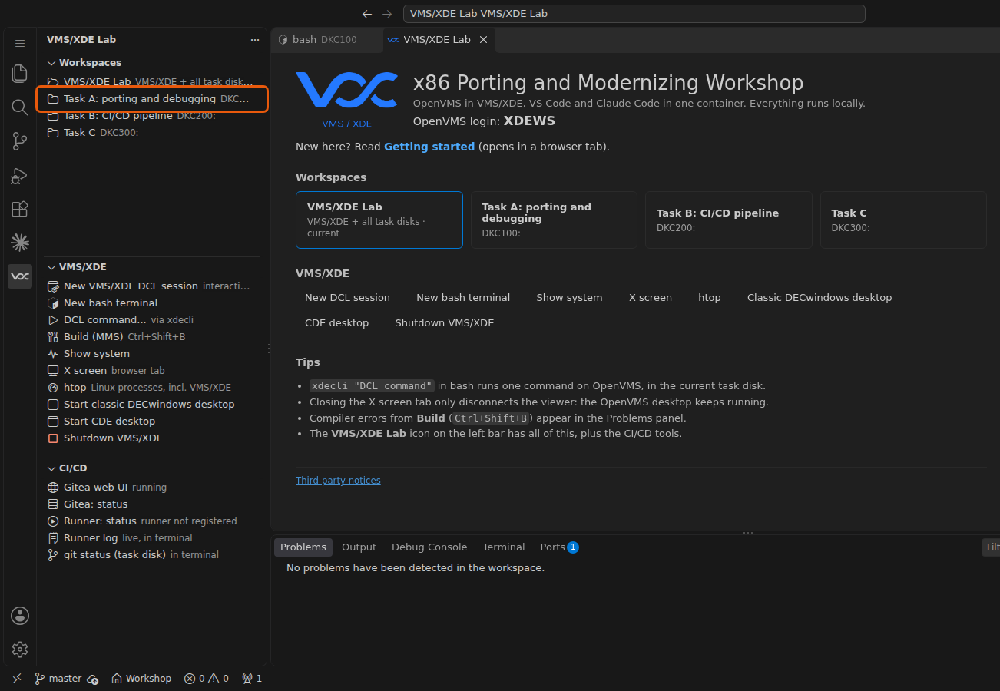
Open a bash terminal: in the VMS/XDE view click New bash terminal. It opens in the task disk, /opt/xde/vms_os/V9.2/DKC100. You use it for git and for Claude Code. Go to the project and look at its history: it is the Alpha application as it runs in production, with nothing done for x86 yet.
bash terminal
cd bootcamp-lab
git log --oneline
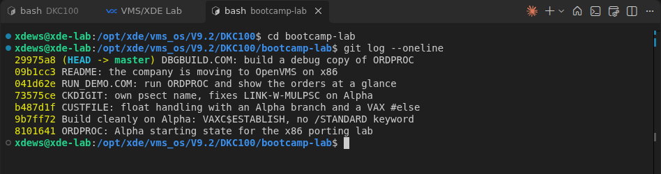
Expected output: seven commits, from 0634b00 ORDPROC: Alpha starting state… up to 1b1171e DBGBUILD.COM….
Open an OpenVMS session: in the VMS/XDE view click New VMS/XDE DCL session. At Username: type XDEWS and press Enter; you get the DCL $ prompt. All OpenVMS commands in this guide are typed here. Go to the project:
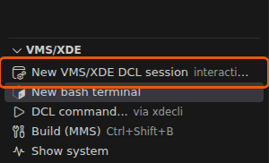
DCL session
set default DKC100:[bootcamp-lab]
show default
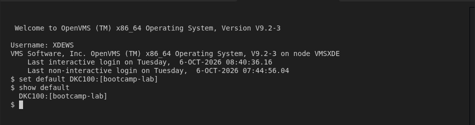
Expected output: DKC100:[bootcamp-lab].
OPTIONALRun the same command from bash. xdecli runs one DCL command, with the current bash folder as its OpenVMS default directory. Single quotes keep bash away from DCL characters such as $, @ and ;. Claude Code runs OpenVMS commands this way, and so does the VS Code build task (Ctrl+Shift+B), which puts compiler errors in the Problems panel.
bash terminal
xdecli 'show default'
expected output
DKC100:[bootcamp-lab]
Two views of one folder. VS Code and bash see /opt/xde/vms_os/V9.2/DKC100/bootcamp-lab/SRC/ORDPROC.C; OpenVMS sees DKC100:[bootcamp-lab.SRC]ORDPROC.C. Edit in VS Code, build in the DCL session: no copying.
✓ Checkpoint — the Task A workspace is open, the bash terminal is in bootcamp-lab, and show default in the DCL session prints DKC100:[bootcamp-lab].
A0 · Meet ORDPROC
Before changing anything, learn what the application does and get its data ready on OpenVMS.
Open README.md in VS Code and read it. Every night ORDPROC reads the day's orders and, for each one, checks the customer number's check digit, looks up the customer, prices every line with discounts and tax, checks the customer's credit, and writes the order to the invoice register. An order that would take a customer over their credit limit goes on hold.
File
Language
What it does
SRC/ORDPROC.C
C
Main program: reads orders, writes the invoice register
SRC/CUSTFILE.C, .H
C
Customer master access (RMS indexed file)
SRC/HANDLER.C
C
Condition handler
SRC/PLATFORM.H
C
Architecture-specific definitions
SRC/PRICING.FOR
Fortran
Price master and line pricing
SRC/CKDIGIT.MAR
MACRO-32
Customer number check digit
BUILD.COM, BUILD/*.OPT
DCL
Build procedure and linker options
RUN_TEST.COM
DCL
Runs ORDPROC and compares the result with the Alpha run
Load the data. The customer and price masters were copied off the Alpha as raw binary, which loses their RMS attributes. LOAD_DATA.COM puts the attributes back and builds the indexed customer master with CONVERT. Run it once.
DCL session
@LOAD_DATA
directory/size [.DATA]
From bash: xdecli '@LOAD_DATA'. Every DCL command in this guide works that way too.
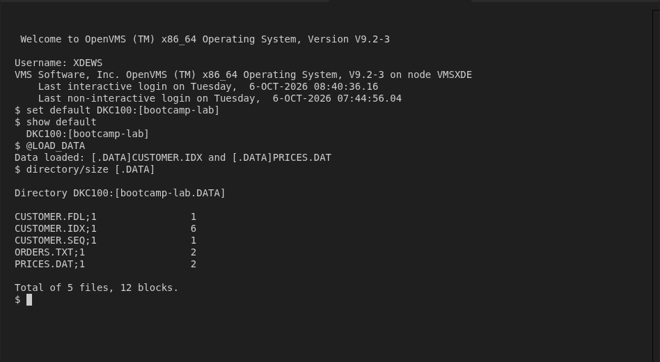
Expected output: Data loaded: … and five files in [.DATA], including the new CUSTOMER.IDX.
OPTIONALLook at the target: open TEST/EXPECTED_INVOICES.RPT. This is what the Alpha printed for the 12 orders in DATA/ORDERS.TXT: 7 approved, 2 on hold, 3 rejected (invalid customer number, unknown customer, suspended account). Your x86 build must print the same file, byte for byte.
✓ Checkpoint — [.DATA]CUSTOMER.IDX exists. Don't run @BUILD yet: that comes after the analysis.
A1 · Find the issues before you build
A build error tells you about one problem at a time, and the worst problems don't cause build errors at all. Start with an inventory: every place where this code depends on the architecture it was written for.
Start Claude Code in the project folder. Claude looks at the files of the folder it starts in, so bootcamp-lab is the best place: it sees the project and nothing else. In the bash terminal:
bash terminal
cd /opt/xde/vms_os/V9.2/DKC100/bootcamp-lab
claude
Claude starts in the terminal tab. The first time, it shows a few one-time screens before its prompt:
Screen
What to do
Choose the text style that looks best with your terminal
Press Enter (any style is fine).
Security notes
Read them, press Enter.
Use Claude Code's terminal setup?
Press Enter for Yes, use recommended settings: Shift+Enter then starts a new line in a prompt.
Is this a project you created or one you trust?
Press ↓, then Enter, to choose Yes, I trust this folder. No, exit is selected first: Enter alone quits Claude.
First: No, exit is selected→
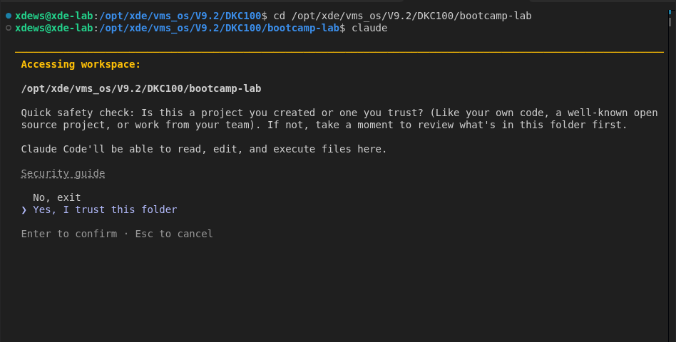
After ↓: Yes, I trust this folder, then Enter
Claude is ready when it shows its prompt line ❯ and manual mode on at the bottom. Keep this tab for Claude and open a second bash terminal for your commands (VMS/XDE view → New bash terminal).
The prompts in this guide name the bootcamp-lab folder, so they also work if Claude starts one level up, in the task disk, or in the Claude pane on the right, which opens at the workspace.
Ask Claude for the inventory. Paste this prompt. It keeps Claude on the project's source and asks for a short table, so the answer comes in about a minute:
Claude Code
The bootcamp-lab folder is an OpenVMS Alpha application that we are
porting to OpenVMS x86-64. Read its BUILD.COM, BUILD/*.OPT and SRC/* only.
Don't build, change or search anything else, and don't decode the data
files: the comments in the source say what format they hold.
List every problem for x86 as a table with one row each: file and line,
what goes wrong, and whether it shows up at compile time, at link time,
or only as wrong output. For every architecture conditional, say which
branch x86 takes. Then one line listing the modules that need no change.
Keep it short: no fixes, no explanations beyond the table.
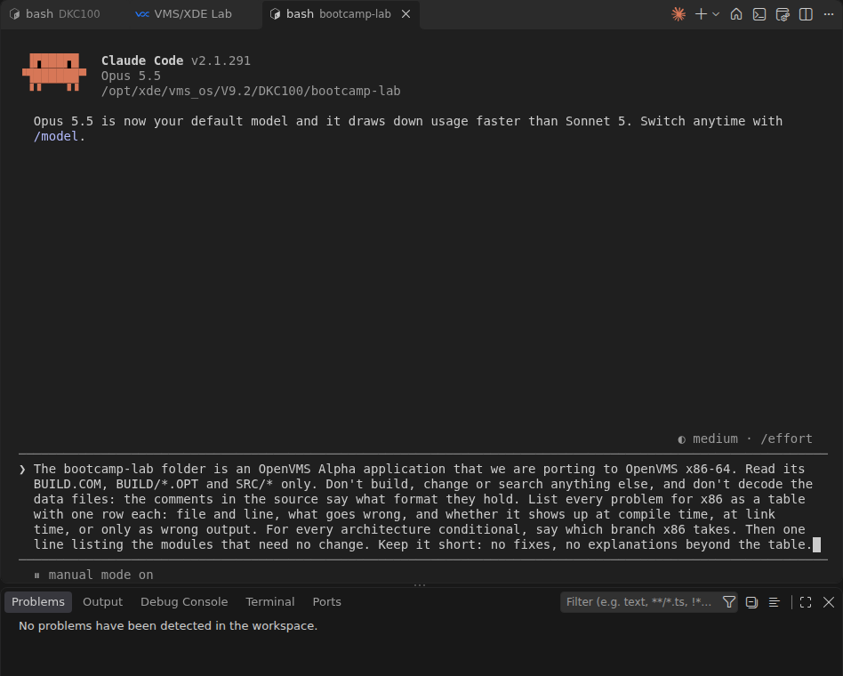
The prompt pasted in the Claude terminal; Enter sends it.
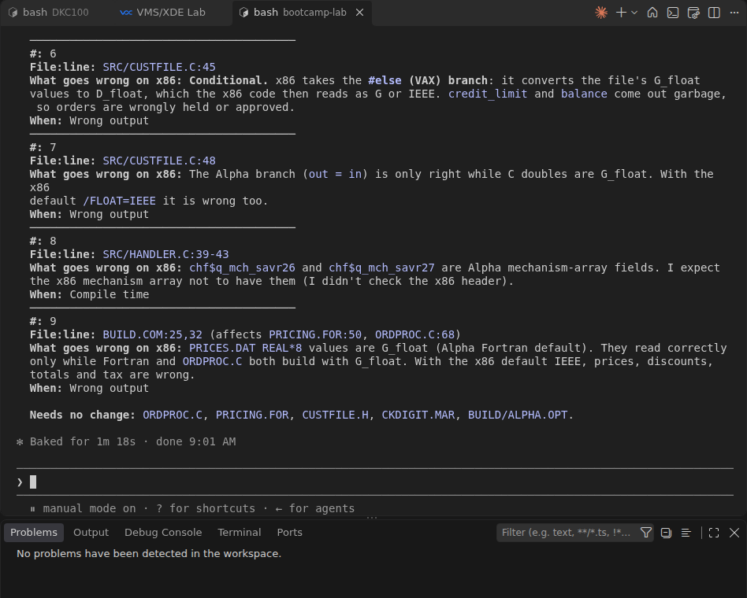
The end of one answer. Claude words and numbers its findings differently each time; check each one against the source in the next step. This answer, for example, puts the price problem under BUILD.COM and lists PRICING.FOR as needing no change.
Without the limits, Claude is thorough: it reads the binary data files byte by byte and predicts every wrong number in the report, which takes several minutes. Ask for details about one row afterwards instead, for example "Explain the CUSTFILE.C row: what does x86 do to the credit limit?"
Check what Claude tells you against the source. For each finding, open the file at that line in VS Code and convince yourself. Pay most attention to anything that compiles cleanly but gives wrong answers on x86: no build error will ever point you to it.
Claude can also run OpenVMS commands itself: it uses xdecli from bash, for example xdecli '@BUILD', and reads the output. In this container xdecli is pre-allowed, so Claude doesn't ask first. For other commands and for every file change it stops and asks Do you want to proceed?: 1. Yes is selected, Enter allows it once, No or Esc stops it. That's why the prompt above tells it not to build yet: in this part the point is to find the issues before anything is built. From A2 on, letting Claude build and read the errors is fine.
Without Claude. The same inventory by hand starts with a search. In the bash terminal: grep -n -E '__alpha|__vax|__x86|ARCH_NAME|G_FLOAT|__RPCC|savr' BUILD.COM SRC/*. For each hit, decide which branch x86 takes. A search only finds code that names an architecture. The other thing to look for is floating-point data in files: what format was it written in, and what does the x86 compiler expect when it reads it?
Write your findings down. Create PORTING.md in the project (Explorer → right-click bootcamp-lab → New File…) and keep one row per issue. It becomes your porting report, and you'll tick the rows off in A2 and A3.
file · bootcamp-lab/PORTING.md
# ORDPROC x86 port - findings
| # | File | What goes wrong on x86 | Found at | Fix | Done |
|---|------|------------------------|----------|-----|------|
| 1 | | | | | |
How many to expect. A good inventory finds six issues in five files (C, Fortran and DCL), plus one module that looks risky but needs no change at all. If you have fewer, ask Claude a follow-up question, for example: "Which branch does x86 take in CUSTFILE.C's file_double, and what does that branch do to the value?"
✓ Checkpoint — PORTING.md lists your findings, each with a file and the reason it breaks on x86. Ask a facilitator to compare it with theirs if you want.
A2 · Fix the build
Now build, take the first error, fix it, and build again. Keep each change as small as you can. Each step below shows what the build reports and what to change; a reference change is folded under each step if you get stuck.
Build the application as it is:
DCL session
@BUILD
expected output (shortened)
Building ORDPROC for x86_64 in [.VAX_OBJ]
#error "Unsupported architecture."
.^
%CC-E-ERRORMESSAGE, #error "Unsupported architecture."
at line number 39 in file DKC100:[bootcamp-lab.SRC]PLATFORM.H;1
...
%BUILD-F-FAILED, build of ORDPROC failed
Two things to notice. The error comes from PLATFORM.H. And the first line already says something is wrong: the build put x86 objects in [.VAX_OBJ]. Keep that for step 5.
WITH CLAUDEYou can make the fixes in steps 3 to 5 yourself, or let Claude make them while you review. To let Claude do it, paste this in the Claude terminal. It builds with xdecli, fixes one error at a time and shows each change with the reason:
Claude Code
Fix the build of bootcamp-lab for x86, one problem at a time, starting
with the first error that @BUILD reports. Make the smallest change that
works on x86 and still builds on Alpha, and leave the floating-point
settings as they are for now. After each change, run xdecli '@BUILD' in
bootcamp-lab and show me the diff with one sentence on why it was needed.
Stop when @BUILD ends with "Built [.BIN]ORDPROC.EXE".
Review every diff against steps 3 to 5 below: would you accept it, and is it the smallest change? Claude's fixes can differ from the reference ones and still be right. In dry runs it guarded the register printing in HANDLER.C with #if defined(__alpha) instead of removing it, and timed the run with sys$gettim. For BUILD.COM it gave x86 a branch of its own once, and once took "smallest" literally: x86 stayed in the VAX branch, still building into [.VAX_OBJ], with only the options file swapped. That builds, but would you want the next person to inherit it? If not, tell Claude what you want instead.
PLATFORM.H: the run timer. The file has an __alpha branch, a __vax branch, and an #error for anything else, so x86 refuses to compile. That's the safe kind of failure. Behind it, the Alpha branch times the run with __RPCC(), the Alpha cycle counter, which has no x86 equivalent. It also assumes a 667 MHz clock and wraps after about 6 seconds. Replace the timer with something that doesn't depend on the architecture at all, rather than adding a third branch with a guessed clock rate.
Reference change
file · SRC/PLATFORM.H (everything after the header comment)
#ifndef PLATFORM_H
#define PLATFORM_H
#include <time.h>
/* Processor time used by ORDPROC, in milliseconds. */
typedef clock_t TIMER_T;
#define TIMER_READ() clock()
#define TIMER_MSEC(start, end) \
((unsigned int) (((end) - (start)) * 1000 / CLOCKS_PER_SEC))
#endif /* PLATFORM_H */
Build again: @BUILD.
HANDLER.C: Alpha registers. The next errors:
expected output (shortened)
%CC-E-NEEDMEMBER, In this statement, "chf$q_mch_savr26" is not a member of "mech".
at line number 39 in file DKC100:[bootcamp-lab.SRC]HANDLER.C;1
...
%CC-E-NEEDMEMBER, In this statement, "chf$q_mch_savr27" is not a member of "mech".
at line number 43 in file DKC100:[bootcamp-lab.SRC]HANDLER.C;1
%BUILD-F-FAILED, build of ORDPROC failed
The condition handler prints R26 and R27 from the mechanism array for the support desk. Those are Alpha registers: the x86 mechanism array doesn't have them. Ask yourself what the support desk really needs. When the handler resignals, the traceback already names the failing routine and line, on every architecture.
Reference change
Remove the mech variable and the two register fprintf calls; keep the condition value message and point to the traceback:
file · SRC/HANDLER.C (in ordproc_handler)
fprintf(stderr, "%%ORDPROC-F-FATAL, unexpected condition %08X,"
" see the traceback below\n", sig->chf$l_sig_name);
return SS$_RESIGNAL;
Build again.
BUILD.COM: the VAX branch. All modules compile now, but the link fails:
expected output
Building ORDPROC for x86_64 in [.VAX_OBJ]
%ILINK-F-OPENIN, error opening CLU$COMMON:[SYSLIB]VAXCRTLG.EXE; as input
-RMS-E-FNF, file not found
%BUILD-F-FAILED, build of ORDPROC failed
Open BUILD.COM. It tests for "Alpha", and everything else falls into an ELSE written for VAX: VAX C run-time library, /G_FLOAT for C and Fortran, VAX.OPT. On x86 the whole build has been running the VAX branch. Give x86 a branch of its own, and make an architecture the procedure doesn't know an error instead of a silent fallback.
Tempting shortcut. Deleting the VAXCRTLG line from VAX.OPT makes the link succeed. Don't stop there: the build is still on the VAX branch with /G_FLOAT, and on our test run the register then showed credit limits like 12835357834298094000000000000000000000.00 with orders approved that the Alpha put on hold. A build that links is not a build that's right.
Reference change
file · BUILD.COM (replaces the IF … ENDIF block)
$ arch = f$edit(f$getsyi("ARCH_NAME"), "UPCASE")
$ if arch .eqs. "ALPHA"
$ then
$ objdir = "[.ALPHA_OBJ]"
$ else
$ if arch .nes. "X86_64"
$ then
$ say "%BUILD-F-ARCH, no build defined for architecture ''arch'"
$ exit %X10000002
$ endif
$ objdir = "[.X86_OBJ]"
$ endif
$ ccq = "/NOLIST"
$ forq = "/NOLIST"
$ macq = "/NOLIST"
$ lnkopt = "[.BUILD]ORDPROC.OPT"
and a new BUILD/ORDPROC.OPT for both architectures (then delete ALPHA.OPT and VAX.OPT):
file · BUILD/ORDPROC.OPT
! ORDPROC.OPT - Linker options for ORDPROC (Alpha and x86)
IDENTIFICATION="ORDPROC V2.4"
Build again. This time it completes:
DCL session
@BUILD
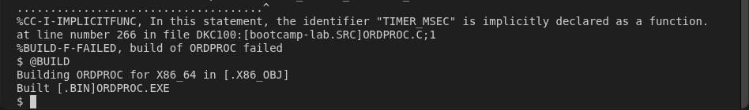
Expected output: Building ORDPROC for X86_64 in [.X86_OBJ], Built [.BIN]ORDPROC.EXE.
Notice what you didn't change: CKDIGIT.MAR. The MACRO-32 compiler on x86 compiles it as it is, and it works. If Claude offers to rewrite it in C, the right answer is no: a rewrite would be new, untested code in a port that should change as little as possible.
✓ Checkpoint — @BUILD ends with Built [.BIN]ORDPROC.EXE and no %CC-E or %ILINK messages. Tick the build issues off in PORTING.md.
A3 · Match the Alpha
It builds. That proves very little. RUN_TEST.COM runs ORDPROC and compares its invoice register with the Alpha's, line by line.
Run the test:
DCL session
@RUN_TEST
expected output (first difference)
ORDPROC: 12 orders, 25 lines, 16 prices, 0 ms
RUN_TEST: FAILED - see TEST_DIFF.TXT
************
File DKC100:[bootcamp-lab]INVOICES.RPT;1
7 KMS-10001 ANCHOR, PLOUGH 10KG 2 0.00 10.0% 0.00 0.00
8 KMS-10002 ANCHOR CHAIN 8MM /M 30 0.00 10.0% 0.00 0.00
9 KMS-10017 SHACKLE, BOW 10MM SS 12 1903599214614152600000000000...
10 ORDER TOTAL 20558871517832850000000000000000000000000000000000000...
11 CREDIT LIMIT 0.00 BALANCE 0.00 STATUS ON HOLD
******
File DKC100:[bootcamp-lab.TEST]EXPECTED_INVOICES.RPT;1
7 KMS-10001 ANCHOR, PLOUGH 10KG 2 145.50 10.0% 261.90 21.61
8 KMS-10002 ANCHOR CHAIN 8MM /M 30 12.35 10.0% 333.45 27.51
9 KMS-10017 SHACKLE, BOW 10MM SS 12 8.95 10.0% 96.66 7.97
10 ORDER TOTAL 692.01 TAX 57.09 GRAND TOTAL 749.10
11 CREDIT LIMIT 25000.00 BALANCE 18250.00 STATUS APPROVED
Every unit price is wrong (zero, or a number with 80 digits), and so are every credit limit and balance. Two different modules read amounts from the data files: PRICING.FOR reads the prices, CUSTFILE.C reads the credit limits and balances.
OPTIONALWhy are the credit limits 0.00? CUSTFILE.C compiled without a single message, so watch it run. The OpenVMS debugger works on VMS/XDE as it does on any OpenVMS system. Nothing is fixed yet, so the bug is there to see. About 8 minutes.
Show the debugger steps
Build a debug copy of ORDPROC. DBGBUILD.COM in the project compiles every module with /DEBUG/NOOPTIMIZE into [.DBG_OBJ] and links it with /DEBUG; your normal build stays as it is, and git ignores the folder. Open it in VS Code if you want to see the commands.
DCL session
@DBGBUILD
expected output
Built [.DBG_OBJ]ORDPROC.EXE - RUN [.DBG_OBJ]ORDPROC to debug
The debugger needs a real terminal, which is why it runs in your DCL session and not through xdecli. Start the debug image:
DCL session
run [.DBG_OBJ]ORDPROC
expected output
OpenVMS x86-64 Debug64 Version V9.3-014
%DEBUG-I-INITIAL, Language: C, Module: ORDPROC
%DEBUG-I-NOTATMAIN, Type GO to reach MAIN program
DBG>
Stop in file_double. SET MODULE loads the symbols of CUSTFILE; the first GO runs to main, the second to the breakpoint. STEP copies the value out of the record and stops at the next statement: the one x86 really runs.
DBG>
set module CUSTFILE
set break file_double
go
go
step
expected output
break at routine ORDPROC\main
13391: int qty, nprices, status, lineno = 0, nlines = 0, norders = 0;
break at routine CUSTFILE\file_double
29188: memcpy(&in, src, sizeof in);
stepped to CUSTFILE\file_double\%LINE 29199
29199: status = cvt$convert_float(&in, CVT$K_VAX_G, &out, CVT$K_VAX_D,
There it is: on x86, file_double is converting to CVT$K_VAX_D, VAX D_floating. The line numbers are large because the debugger counts the lines of the included headers too.
Look at the value before and after the conversion:
DBG>
examine/quadword/hex in
step/return
examine out
exit
expected output
CUSTFILE\file_double\in: 000000006A0040F8
stepped on return from CUSTFILE\file_double\%LINE 29199 to CUSTFILE\file_double\%LINE 29206+5
29206: return out;
CUSTFILE\file_double\out: 0.663132761156627E-314
in holds the first customer's credit limit, 25000.00 in G_floating. out is the same amount in D_floating; read as an x86 double it's a tiny number, 6.6E-314, which prints as 0.00. Steps 5 and 6 below fix it.
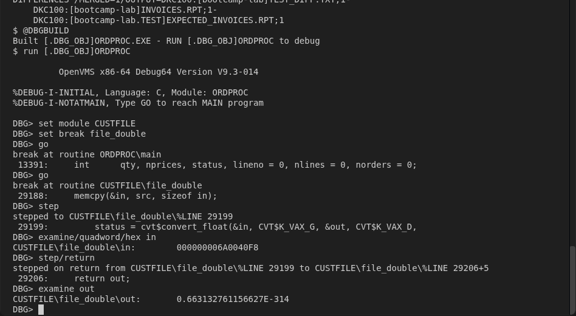
commands and their output, ending with out: 0.663132761156627E-314." width="948" height="520">The whole debugger session in the DCL session tab.
The debug build compiles its own copy, so it shows the same whether or not Claude changed BUILD.COM in A2.
OPTIONAL · WITH CLAUDEPin the bug with unit tests before you fix it. A test that fails now and passes after the fix proves the fix was needed, and keeps it fixed. Paste this in the Claude terminal:
Claude Code
The credit limits in bootcamp-lab's invoice register come out wrong on
x86. Before anything is fixed, pin this down with unit tests: known-answer
tests for the G_floating conversion in CUSTFILE.C (for example, the
G_floating bytes F8 40 00 6A 00 00 00 00 are 25000.0) and for the CKDIGIT
check digit. If CUSTFILE.C needs a small change so the conversion can be
tested, keep it minimal and say why, but don't fix the conversion yet.
Put the tests in [.TESTS] with a TEST_UNITS.COM in bootcamp-lab that
builds them into [.TESTS_OBJ], runs them and prints PASS or FAIL per test
and a total, and add TESTS_OBJ/ to .gitignore. Run it with
xdecli '@TEST_UNITS' and report which tests fail and why. Keep the
report short.
Then run the tests yourself:
DCL session
@TEST_UNITS
expected result (one dry run)
TOTAL: 11 passed, 6 failed, 17 tests
Your numbers and wording will differ (Claude wrote between 17 and 29 tests in dry runs), but the pattern should not: every non-zero amount fails the conversion test, and every CKDIGIT test passes, which backs the decision to leave the MACRO-32 alone. 25000.0 comes back as 6.63133e-315 (prints as 0.00), or as a huge number such as 1.28e37 if Claude made the A2 fixes and the build still uses /G_FLOAT. In the dry run Claude kept CUSTFILE.C unchanged: its test includes the source file to reach the static routine. After the fixes in steps 5 and 6, @TEST_UNITS passes as well.
WITH CLAUDEAs in A2, you can fix the data issues yourself (steps 5 and 6) or let Claude do it and review. Paste this in the Claude terminal:
Claude Code
@BUILD works. Now make @RUN_TEST pass: run xdecli '@RUN_TEST', find why
the invoice register differs, and fix it in the code where the data is
read. Don't change DATA/ or TEST/. If you choose between converting the
values as they are read and compiling with /FLOAT=G_FLOAT, say which and
why. Show each diff with one sentence on why, then run @RUN_TEST again.
If Claude did A2, your build still uses /G_FLOAT, so RUN_TEST shows different wrong numbers than step 1: prices are right, and credit limits come out as huge numbers such as 12835357834298094000… instead of 0.00. Same cause, the silent #else in CUSTFILE.C. In a dry run Claude chose to convert the values as they are read, removed /G_FLOAT, and gave its reasons. Compare its changes with steps 5 and 6, and with the Another valid answer note below.
PRICING.FOR: the price master.PRICES.DAT holds VAX G_floating REAL*8 values. The Alpha Fortran compiler's default was G_floating, so the Alpha read them directly. The x86 compiler's default is IEEE, so the same bytes mean something else. You can't convert the file (it's shared, and the rules forbid it). Convert the values as they're read: the Fortran OPEN statement can do that for an unformatted file.
CONVERT='VAXG' does nothing on Alpha, so the source still builds and runs there.
Build and test again:
DCL session
@BUILD
@RUN_TEST
expected output (first difference)
RUN_TEST: FAILED - see TEST_DIFF.TXT
************
File DKC100:[bootcamp-lab]INVOICES.RPT;1
11 CREDIT LIMIT 0.00 BALANCE 0.00 STATUS ON HOLD
******
File DKC100:[bootcamp-lab.TEST]EXPECTED_INVOICES.RPT;1
11 CREDIT LIMIT 25000.00 BALANCE 18250.00 STATUS APPROVED
The prices are right now. Every credit limit and balance still reads as 0.00, so every priced order goes on hold.
CUSTFILE.C: the silent #else. Open file_double in CUSTFILE.C. It has an #if defined(__alpha) branch and an #else written for VAX, which converts the file's G_floating amounts to VAX D_floating. x86 isn't Alpha, so it takes the #else, compiles without a single message, and converts every amount to a format an x86 program can't read. Compare this with PLATFORM.H in A2: same mistake, but there the last branch was an #error, so x86 refused to build. Here it was a guess, so x86 built and gave wrong answers.
Fix it in two parts: give x86 its own branch (G_floating to IEEE T_floating), and turn the catch-all into an #error so the next new architecture fails to build instead of failing silently.
Reference change
file · SRC/CUSTFILE.C (in file_double: replaces #else … #endif)
#elif defined(__x86_64)
/* x86 doubles are IEEE T_floating (the compiler default). */
{
unsigned int status;
status = cvt$convert_float(&in, CVT$K_VAX_G, &out, CVT$K_IEEE_T,
CVT$M_ROUND_TO_NEAREST);
if (!(status & 1))
lib$signal(status);
}
#elif defined(__vax)
/* VAX C doubles are D_floating (the VAX C default). */
{
unsigned int status;
status = cvt$convert_float(&in, CVT$K_VAX_G, &out, CVT$K_VAX_D,
CVT$M_ROUND_TO_NEAREST);
if (!(status & 1))
lib$signal(status);
}
#else
#error "file_double: no floating-point conversion for this architecture"
#endif
OPTIONALSee the night's orders. ORDPROC itself prints only a count; RUN_DEMO.COM runs it and shows one line per order with its total, credit limit and status, the summary, and whether the register matches the Alpha. Run it before a fix too: it shows the zero credit limits and garbage totals directly. @RUN_DEMO FULL also prints the whole register.
DCL session
@RUN_DEMO
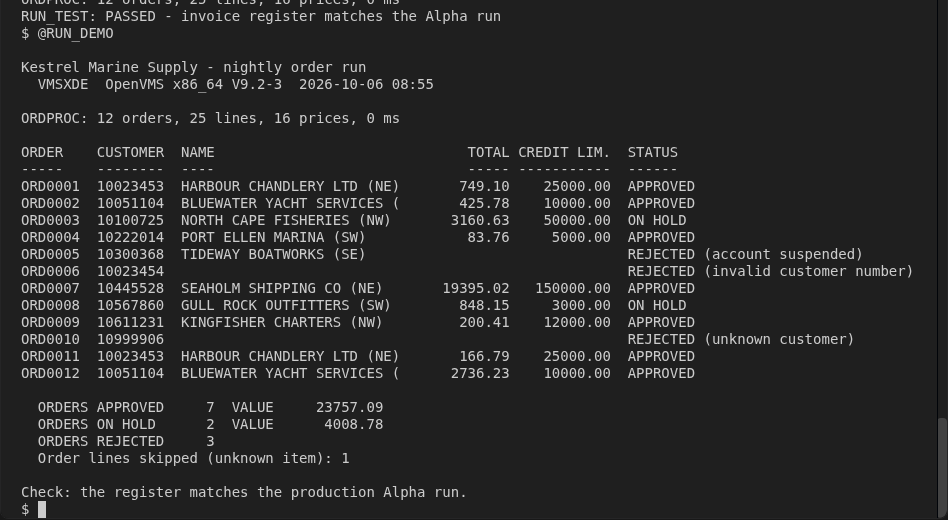
Expected output: one line per order, the summary (7 approved, 2 on hold, 3 rejected) and Check: the register matches the production Alpha run.
Another valid answer. Compiling C and Fortran with /FLOAT=G_FLOAT makes both data issues disappear in one line of BUILD.COM. It's legitimate, but there's a cost: x86 has no G_floating hardware, so every floating-point operation converts, and every IEEE library or new code ORDPROC calls needs care at the boundary. Pick one approach, not both: the x86 branch in file_double assumes IEEE doubles. Be ready to say why you chose yours.
✓ Checkpoint — @RUN_TEST prints RUN_TEST: PASSED. All six issues in PORTING.md are ticked, and CKDIGIT.MAR is listed as needing no change.
Final · Review the port
A port is a change set someone else has to review. Look at yours the way they will, then keep what you learned for the next one.
See everything you changed. DATA/ and TEST/ must not appear:
bash terminal
git status --short
git diff --stat
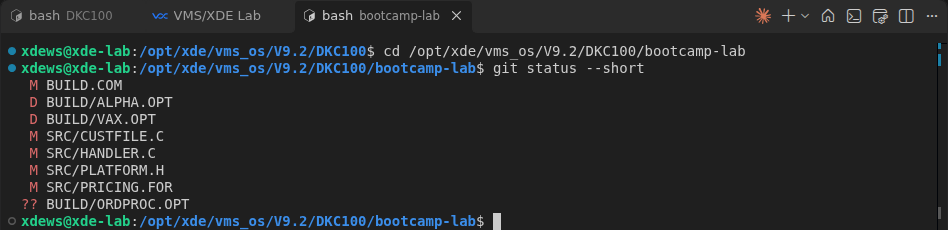
git status --short with the reference changes, before PORTING.md is added.
With the reference changes, git status lists four changed source files, BUILD.COM, the deleted BUILD/ALPHA.OPT and BUILD/VAX.OPT, and the new BUILD/ORDPROC.OPT and PORTING.md. git diff --stat counts only the files git already knows, so new files appear only in git status. CKDIGIT.MAR, ORDPROC.C, CUSTFILE.H and LOAD_DATA.COM don't change.
For each changed file, explain the change in one sentence. If you can't, ask Claude to explain it, then decide whether you still want it. Add the sentence to the file's modification history at the top, as the original authors did.
WITH CLAUDEKeep what you learned. A skill is a short instruction file Claude Code reads when a task matches it. Ask Claude to write one from this port, based on your PORTING.md and your changes, so it works even if you restarted Claude along the way:
Claude Code
Create a skill from this port, saved as
.claude/skills/alpha-to-x86-port/SKILL.md in bootcamp-lab. Base it on
PORTING.md and git diff, not on general knowledge. Include: when to use
it, the checks to run before building, the fix patterns we used (with
one short example each), and the mistakes to avoid. Keep it under 60
lines. Don't repeat what the vms-porting skill already covers.
Claude asks before it writes anything in .claude/: allow it. The skill lives in the project, so it is committed with the port in the next step and doesn't change Claude's behaviour in your other tasks. In dry runs Claude wrote 50 to 55 lines: checks to run before building, five fix patterns with one-line examples, and mistakes to avoid. It pointed to the vms-porting skill for the general topics instead of repeating them.
Check that it works. Leave Claude with /exit, start it again in bootcamp-lab (claude), and ask a question about a different program:
Claude Code
We have another Alpha program to port to x86. Its C code reads REAL*8
amounts from a binary file and has an #if defined(__alpha) ... #else
block around the read. How should I handle it?
Claude should load alpha-to-x86-port first and answer from your port ("Treat it the same way we handled CUSTFILE…"). In the dry run it did, in under 20 seconds. That is the point: the next port starts from what this one taught.
Commit the port. git already knows your name from Getting started.
bash terminal
git add -A
git commit -m "Port ORDPROC to OpenVMS x86"
✓ Checkpoint — RUN_TEST passes, git log shows your commit, PORTING.md explains every change, and if you made the skill, .claude/skills/alpha-to-x86-port/SKILL.md is in the same commit.
What this port shows
Analyse before you build. Of the six issues, two stopped the compile and one the link. One (__RPCC) was hidden behind another error and only analysis finds it. Two built cleanly and gave wrong answers, and only the comparison with the Alpha caught them.
A catch-all #else or ELSE is a guess about the future.PLATFORM.H guessed safely (#error). CUSTFILE.C and BUILD.COM guessed "VAX". When you add the x86 branch, make the unknown case an error.
Fix at the I/O boundary, not in the data. The data files are shared, so the conversion belongs where the program reads them.
Keep what you learned. A skill built from your own port makes Claude start the next port from this one's lessons, not from scratch.
Verify rather than replace. The MACRO-32 module needed nothing. Rewriting working code is new risk in a port.
At your site: the same tools (VSI compilers, the OpenVMS debugger, Claude Code) work the same way on OpenVMS x86 servers and on VMS/XDE on a developer's computer.